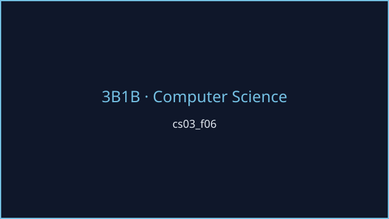

হাফম্যান কোডে প্রতিটি প্রতীককে পূর্ণসংখ্যা বিট দিতে হয়। কিন্তু যদি কোনো প্রতীকের সম্ভাবনা ০.৭ হয়, তার আদর্শ কোড দৈর্ঘ্য $-\log_2 0.7 \approx 0.5$ বিট—হাফম্যান তাকে ১ বিটই দেয়। এই ফাঁকটিই অ্যারিথমেটিক কোড পূরণ করে।
প্রতিটি প্রতীককে আলাদা কোড না দিয়ে পুরো বার্তাটিকে একটি একক সংখ্যা হিসেবে লেখা যায়—এটিই অ্যারিথমেটিক কোডিং।
সমস্ত সম্ভাব্য বার্তাকে $[0,1)$ রেখার ওপর ভাগ করা যায়। প্রতিটি প্রতীক নির্দিষ্ট একটি অংশ দখল করে—সম্ভাবনা যত বড়, অংশ তত বড়। বার্তা পড়ার সাথে সাথে আমরা এই ব্যবধানকে ক্রমশ সংকুচিত করি।
শেষে যে ছোট ব্যবধানটি পাই, তার ভেতরের যেকোনো সংখ্যা দিয়ে পুরো বার্তাটি চেনা যায়। ব্যবধান যত ছোট, তত বেশি বিট লাগে—অর্থাৎ কম সম্ভাবনার বার্তা বেশি বিট নেয়।
প্রথম অক্ষরের জন্য তার সম্ভাবনা-অনুপাতে ব্যবধান নির্বাচন করি। পরের অক্ষরের জন্য আগের ব্যবধানের ভেতরে আবার সেই অক্ষরের সম্ভাবনা-অনুপাতে ভাগ করে নির্বাচন করি—এভাবেই এগোই।
ডিকোডারীও একই কাজ করে—প্রাপ্ত সংখ্যাটি কোন ব্যবধানে আছে দেখে প্রথম অক্ষর বের করে, তারপর ব্যবধান পুনর্নির্মাণ করে পরের অক্ষর বের করে। বার্তা শেষ বোঝাতে একটি বিশেষ ''এন্ড-অফ-মেসেজ'' প্রতীক ব্যবহার করা হয়।
আধুনিক JPEG, video codec ও JPEG2000-এ অ্যারিথমেটিক কোডিং ব্যবহৃত হয়।
অ্যারিথমেটিক কোডের গড় দৈর্ঘ্য এন্ট্রপির খুব কাছাকাছি পৌঁছায়—কোনো পদ্ধতিই এর চেয়ে কম বিট ব্যবহার করতে পারে না। তথ্য তত্ত্বের সৌন্দর্য হলো এই সীমা যে আমরা আগের পাঠে হিসাব করেছি, তা এখানে বাস্তবায়িত হয়।
নিচের ইন্টারেক্টিভ উপাদান ও কুইজের মাধ্যমে পাঠের ধারণা নিজে যাচাই করুন।
